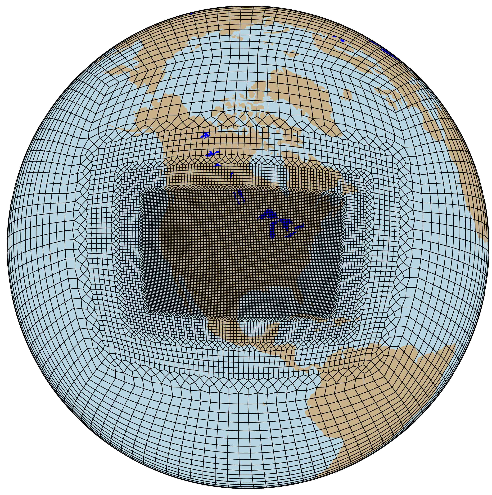

4. Atmospheric configurations (compsets)
There are a number of atmospheric models which can run within CESM. While CAM is the basic atmospheric model within CESM, there are several models with significant extensions to CAM which may also be run within CESM. The available atmospheric models in CESM3 are:
CAM: Community Atmosphere Model
CAM-chem: Community Atmosphere Model with Chemistry
WACCM: Whole Atmosphere Community Climate Model
WACCM-X: Whole Atmosphere Community Climate Model with thermosphere and ionosphere extension
Each of these models has a number of standalone CAM configurations provided to run them. These configurations are implemented in the CIME framework via compsets as discussed in CESM2 Component Sets. The predefined compsets have the support levels:
Scientific support: Specific compset/resolution pairs which have had significant, multi-year runs made and have been studied scientifically. It is important to note that resolutions which are not listed, are not scientifically supported, have not had tunings performed and should not be used for scientific studies without careful examination of the results.
Functional support: One or more tests for this compset have been made using at least one resolution. Extensive scientific study has not been performed. No attempts have been made to validate the scientific quality of these runs and tunings have NOT been performed on them.
Unsupported: These compsets are setup as a convenience for various reasons and they are not supported for science runs. If a user decides to use one of these compsets, they must also supply the
--run-unsupportedflag tocreate_newcase. These compsets may not even compile and run successfully as they have not been tested.
The compsets for standalone CAM are the F, P, and Q compsets (F, P, and Q are the first letters of the compset aliases). They are broadly defined as follows:
F compsets use CAM and active Land (CTSM) with prescribed Sea-Surface Temperatures (SSTs) and sea-ice extent (other components are stubs).
P compsets use only the CAM component configured to run only the radiation code driven by data collected from a previous run. This configuration is called PORT – Parallel Offline Radiation Tool.
Q compsets use CAM with a data ocean. CAM is configured to run aquaplanet simulations with either prescribed ocean (QP) or slab ocean(QS).
This chapter will discuss some of the atmospheric compsets in more detail, but a complete listing of all compsets is found at CESM2 Component Configurations (compsets). The complete listing of grid resolutions can be found at CESM2 Grid Resolutions.
4.1. CAM scientifically supported compsets
CAM has a number of compsets/resolutions which are supported scientifically. These compsets are detailed in the following table. A specific compset may be listed below, but unless the resolution is also listed, that compset/resolution combination is not scientifically supported. Different resolutions exhibit different behavior and as a result require different tunings. The scientifically supported designation is limited to the specific compset/resolution pairs listed in the following tables.
Scientifically supported CAM compsets
Compset Name |
supported resolution |
Description |
Period |
|---|---|---|---|
FHIST |
f09_f09_mg17 |
Historical CAM6 using 1 degree finite volume dycore [Note - this is similar to the obsolete CAM5 FAMIP compset] |
1979 to 2015 |
F2000climo |
f09_f09_mg17 |
Climatological present day climate (year 2000) with CAM6 physics using 1 degree fv dycore |
|
To run the FHIST compset, and create a case called fhist, simply run the following commands:
% cd cime/scripts
% ./create_newcase --case fhist --compset FHIST --res f09_f09_mg17
% cd fhist
% ./case.setup
% ./case.build
% ./case.submit
To run the F2000climo compset, and create a case called f_present_day, simply run the following commands:
% cd cime/scripts
% ./create_newcase --case f_present_day --compset F2000climo --res f09_f09_mg17
% cd f_present_day
% ./case.setup
% ./case.build
% ./case.submit
An important reminder: On cheyenne, if you are building on a login node, you must say:
% qcmd -- ./case.build
It should be noted that a number of CAM4 and CAM5-specific compsets have been eliminated from the CAM6 release. The rationale behind this is that due to changes in code and namelist settings, a user is unable to numerically reproduce CAM4 or CAM5 runs similar to what they would get running CESM1.2. It is recommended that if a user wants to make a true CAM4 or CAM5 run, that they do so using CESM1.2 instead of CESM2.0.
4.2. CAM developmental compsets
The CAM6.3 has a number of developmental compsets that are being evaluated for candidate CESM3 applications. They currently require the “run-unsupported” flag
% ./create_newcase –case … –compset … –run-unsupported
Uniform resolution developmental CAM compsets
Resolution |
Description |
Compsets |
|---|---|---|
ne30_ne30_mg17 |
Approximately 1 degree CAM-SE |
F2000climo, F1850, FHIST, FHIST_BGC |
ne30pg3_ne30pg3_mg17 |
Approximately 1 degree CAM-SE-CSLAM |
F2000climo, F1850, FHIST, FHIST_BGC, B1850 |
ne30pg2_ne30pg2_mg17 |
Approximately 1 degree CAM-SE-CSLAM with a lower resolution physics grid (approximately 1.5 degrees) |
F2000climo, F1850, FHIST, FHIST_BGC |
ne120pg3_ne120pg3_mt13 |
Approximately 1/4 degree CAM-SE-CSLAM |
F2000climo, F1850 |
ne120pg2_ne120pg2_mt12 |
Approximately 1/4 degree CAM-SE-CSLAM with a lower resolution physics grid (approximately 3/8 degree) |
F2000climo, F1850 |
C96_C96_mg17 |
Approximately 1 degree CAM-FV3 |
F2000climo, F1850, FHIST, FHIST_BGC, B1850 |
In physics grid (pg) configurations using CAM-SE-CSLAM each element is divided in 3x3 (pg3) or 2x2 (pg2) quasi-uniform resolution physics columns. The pg3 and pg2 configurations are documented in Herrington et al. (2019a) and Herrington et al. (2019b), respectively.
Variable resolution developmental CAM compsets
CONUS Grid
The CONUS variable resolution grid is a 1 degree horizontal resolution grid with a regional refinement of 1/8 degree resolution over the continential United States.
{kind=link}

ARCTIC Grids
Two variable resolution grids are available for the Artic region. The ARCTIC grid, which is a 1 degree horizontal resolution grid with regional refinement of 1/4 degree resolution over the broader Arctic region and the ARCTICGRIS grid which additionally refines a patch covering the Greenland with 1/8 degree resolution.
{kind=link}
{kind=link}
Resolution |
Description |
Compsets |
|---|---|---|
ne0CONUSne30x8_ne0CONUSne30x8_mt12 |
Approximately 1/4 degree resolution over the Contiguous United States and approximately 1 degree elsewhere |
F2000climo, F1850, FHIST, FHIST_BGC |
ne0ARCTICne30x4_ne0ARCTICne30x4_mt12 |
Approximately 1/4 degree resolution over Greenland and approximately 1 degree elsewhere |
F2000climo, F1850, FHIST, FHIST_BGC |
ne0ARCTICGRISne30x8_ne0ARCTICGRISne30x8_mt12 |
Approximately 1/8 degree resolution over Greenland, otherwise identical to the ne0ARCTICne30x4 grid elsewhere |
F2000climo, F1850, FHIST, FHIST_BGC |
4.3. CAM Simple Models
- There are several simpler configurations in which CAM can be run. These include:
Generic adiabatic configuration (FADIAB)
Specific adiabatic configuration (FDABIP04)
Baroclinic wave with Kessler microphysics and terminator chemistry (FKESSLER)
Held-Suarez simple model (FHS94)
Moist Held-Suarez simple model (FTJ16)
Aquaplanet (QP and QS compsets)
PORT - Parallel Offline Radiation Tool (P compsets)
SCAM - single column model (FSCAM compset)
For more information on the CESM Simpler Models project see http://www.cesm.ucar.edu/models/simpler-models/
Scientifically supported CAM simpler model compsets
Compset Name |
supported resolution |
Description |
Period |
|---|---|---|---|
FADIAB |
f09_f09_mg17 |
Generic adiabatic configuration |
|
FDABIP04 |
T42z30_T42_mg17, T85z30_T85_mg17, T85z60_T85_mg17 |
Specific adiabatic configuration, Polvani et al. baroclinic wave |
|
FSCAM |
T42_T42 |
Single column CAM |
|
FHS94 |
T42z30_T42_mg17, T85z30_T85_mg17, T85z60_T85_mg17, f09_f09_mg17 |
Held-Suarez simpler model |
|
FTJ16 |
f09_f09_mg17 |
Moist Held-Suarez simpler model |
|
FKESSLER |
f09_f09_mg17, ne30_ne30_mg17, ne30pg3_ne30_pg3_mg17 |
Ulrich et al. baroclinic wave with Kessler microphysics and terminator chemistry |
|
QPC6 |
f09_f09_mg17, f19_f19_mg17 |
Prescribed SST Aquaplanet using CAM6 |
2000 to 2015 |
QSC6 |
f09_f09_mg17, f19_f19_mg17 |
Slab-Ocean Aquaplanet using CAM6 |
2000 to 2015 |
Note that FADIAB, FHS94, FTJ16, FKESSLER, and QPC6 compset’s can be run with the FV, FV3, SE and SE-CSLAM dynamical cores using the “run-unsupported” flag
% ./create_newcase –case … –compset … –run-unsupported
4.3.1. CAM aquaplanet (QP and QS compsets)
Aquaplanets are configurations of global atmospheric models that have no landmasses and saturated lower boundaries. The aquaplanet compsets in CESM2 provide a convenient way to configure CAM with prescribed, zonally symmetric SST, a user-supplied SST dataset, or a slab-ocean lower boundary. The surface is controlled through the data ocean model. There are a standard set of SST profiles based on the AquaPlanet Experiment project (APE; Neale & Hoskins [2], Williamson et al. [3]). The advantage of an aquaplanet configuration is that it allows the user to run the full CAM parameterization suite while retaining much simpler surface conditions than the complex combination of land, ocean, and sea-ice in the real world. The CAM5 aquaplanet configuration is described by Medeiros et al. [1]
- Aquaplanet compsets which have been tested, but are not scientifically supported:
QPC5 – Prescribed SST Aquaplanet using CAM5
QPC4 – Prescribed SST Aquaplanet using CAM4
QSC5 – Slab-Ocean Aquaplanet for CAM5
QSC4 – Slab-Ocean Aquaplanet for CAM4
4.3.1.1. Example 1: Default Aquaplanet with prescribed SST
To run the standard CAM6 aquaplanet, simply supply the compset name:
% cd cime/scripts
% ./create_newcase --case aqua_case --compset QPC6 --res f09_f09_mg17
% cd aqua_case
% ./case.setup
% ./case.build
% ./case.submit
By default, initial conditions from a previous aquaplanet simulation are used. The SST pattern is the APE “QOBS” option, which is used in APE and CFMIP protocols. The atmospheric ozone is specified to be that used for APE. Aerosol emissions are neglected except for sea salt (which is diagnostic), see Medeiros et al. [1] for details.
4.3.1.2. Example 2: Default Aquaplanet with Slab-Ocean Model
To run the standard CAM6 aquaplanet with a 30 m uniform slab-ocean, simply supply the compset name:
% cd cime/scripts
% ./create_newcase --case aqua_case --compset QSC6 --res f09_f09_mg17
% cd aqua_case
% ./case.setup
% ./case.build
% ./case.submit
Note that the slab-ocean model has no ocean heat transport by default; the user must specify an appropriate “qflux” file. To specify such a file:
% ./xmlchange DOCN_SOM_FILENAME="path/to/file.nc"
where path/to/file.nc is the path to the ppropriate “qflux” file.
4.3.1.3. Example 3: Aquaplanet with alternate prescribed SST
All of the APE SST profiles are available. To use them invoke the long compset name with the user compset option:
% cd cime/scripts
% ./create_newcase --case cam5_3keq --compset 2000_CAM50_SLND_SICE_DOCN%AQP7_SROF_SGLC_SWAV --res f09_f09_mg17 --run-unsupported
(Note that you may see a message "Did not find an alias or longname compset match..." This message may be ignored)
% cd cam5_3keq
% ./case.setup
% ./case.build
% ./case.submit
The example uses the 3KEQ SST pattern, which is specified with “AQP7” in the compset name. The analytical SST profiles are defined in the source code (cime/src/components/data_comps/docn/docn_comp_mod.F90). Also note this example switched to CAM5 physics by specifying “CAM50” in the compset name. The run-unsupported flag is required.
4.3.1.4. Example 4: Aquaplanet with user-specified SST dataset
An arbitrary SST dataset can be specified instead of the default APE SST. To do that, start with the default case, and then change the data ocean mode and specify the file:
% cd cime/scripts
% ./create_newcase --case aqua_sst_case --compset QPC4 --res f19_f19_mg17 --run-unsupported
% cd aqua_sst_case
% ./case.setup
% ./xmlchange DOCN_MODE=sst_aquapfile
% ./xmlchange DOCN_AQP_FILENAME=sst.nc
% ./case.build
% ./case.submit
Where sst.nc is the user-supplied SST file, which follows the same conventions as SST files used for F compsets. Note this example switches to CAM4 physics on a 2-degree grid, so requires the run-unsupported flag.
4.3.2. CAM Parallel Offline Radiation Tool (PORT - P compsets)
PORT is used as part of the process for computing radiative forcing and instantaneous radiative forcing. For effective radiative forcing please see the documentation related to F-case runs.
PORT uses instantaneous samples of the model state to compute the radiative fluxes and heating rates through the atmosphere. This computation does not include middle and upper atmospheric radiative transfer as implemented in WACCM. The only prognostic variable is temperature, in the specific PORT configuration to compute radiative forcing that includes the stratospheric adjustment (fixed dynamical heating).
4.3.2.1. PORT Compsets
short name |
long name |
|---|---|
PC4 |
2000_CAM40%PORT_SLND_SICE_SOCN_SROF_SGLC_SWAV |
PC5 |
2000_CAM50%PORT_SLND_SICE_SOCN_SROF_SGLC_SWAV |
PC6 |
2000_CAM60%PORT_SLND_SICE_SOCN_SROF_SGLC_SWAV |
The user is required to supply radiation input datasets via one of the namelist options:
offline_driver_infile (for single input file)
offline_driver_fileslist (sequential list of input files)
These can be set in the user_nl_cam file found in the CESM case directory.
4.3.2.2. Example: Using PORT to study flux differences due to 2 x CO2
4.3.2.2.1. Sample the base run
Create the base sampling case:
% cd cime/scripts
% ./create_newcase --case base_run_case --res f09_f09_mg17 --compset F2000climo
% cd base_run_case
% ./case.setup
Set up the user_nl_cam file for the base run:
! Output the radiation data
rad_data_output=.true.
! Specify the radiation data be written to history file number 2 (rad_data will be in files with cam.h1 in their name)
rad_data_histfile_num=2
! Write out the instantaneous rad_data and radiation diagnostics
rad_data_avgflag = 'I'
avgflag_pertape = 'A','I'
! Make certain the radiation is called every time step
iradlw = 1
iradsw = 1
! Include radiation diagnostics
fincl2 = 'FLNT', 'FLNR','FLNS', 'FSNT','FSNR', 'FSNS'
! Output frequency
nhtfrq = 0,73
! number of time records per individual history file
mfilt = 1,5
! double precision output
ndens = 1,1
Note: It has been found that sampling every 73’rd time step is a good balance of computational cost and size of data for dtime = 1800 and a 2-degree horizontal resolution. [4]
Build and submit this sampling run data:
% ./xmlchange STOP_N=16
% ./xmlchange STOP_OPTION=nmonths
% ./case.build
% ./case.submit
After your job completes, you will have a number of files, including ones with filenames containing “cam.h1”. The “cam.h1” files contain the radiation history which was specified by the namelist and will be used in the next step.
4.3.2.2.2. PORT validation
Create the PORT validation run:
% ./create_newcase --case port_run_case --res f09_f09_mg17 --compset PC6
% cd port_run_case
Set up the user_nl_cam file for the PORT run:
! PORT input data
offline_driver_infile = '/path/base_run_case.cam.h1.0001-01-01-00000.nc'
! Output the radiation data
rad_data_output=.true.
! Specify the radiation data be written to history file number 2 (rad_data will be in files with cam.h1 in their name)
rad_data_histfile_num=2
! Write out the instantaneous rad_data and radiation diagnostics
rad_data_avgflag = 'I'
avgflag_pertape = 'A','I'
! Make certain the radiation is called every time step
iradlw = 1
iradsw = 1
! Include radiation diagnostics
fincl2 = 'FLNT', 'FLNR','FLNS', 'FSNT','FSNR', 'FSNS'
! Output frequency
nhtfrq = 0,73
! number of time records per individual history file
mfilt = 1,5
! double precision output
ndens = 1,1
For verification tests the run time length should be long enough to include at least a few sampling times.
Build and submit this validation run data:
% ./case.setup
% ./xmlchange STOP_N=5
% ./xmlchange STOP_OPTION=ndays
% ./case.build
% ./case.submit
The differences in radiation diagnostics (FLNT,FLNR,FLNS,FSNT,FSNR,FSNS) in the the sampling base run and the PORT run should be zero (or within roundoff).
4.3.2.2.3. Compute forcing due to a change in composition (CO2, as an example)
In this case we are doubling the CO2 and modifying this via the netcdf utility, ncap for each file. Further documentation on ncap can be found in the NCO User Guide.
Modify the composition in the sample files. For each file listed in /path/samples.inputs:
% for fin in base_run_case.cam.h1*nc; do fout="${fin/cam.h1/cam.h1-2xCO2}"; ncap2 -s "rad_CO2=2.0*rad_CO2" $fin $fout; done
Prepare sequential list of input files for the PORT run:
% ls -1 /path/base_run_case.cam.h1-2xCO2.*nc > /path/samples2xCO2.inputs
Prepare the PORT run:
% ./create_newcase --case port_2xCO2_case --res f09_f09_mg17 --compset PC6
% cd port_2xCO2_case
Set up the user_nl_cam file for the PORT run:
! Sequential list of input files
offline_driver_fileslist = '/path/samples2xCO2.inputs'
! Allow temperatures above the tropopause to equilibrate under the assumption of fixed dynamical heating
rad_data_fdh = .true.
! Write out the instantaneous radiation diagnostics
avgflag_pertape = 'A','I'
! Make certain the radiation is called every time step
iradlw = 1
iradsw = 1
! Include radiation diagnostics
fincl2 = 'FLNT', 'FLNR','FLNS', 'FSNT','FSNR', 'FSNS'
! Output frequency
nhtfrq = 0,73
Build and submit:
% ./case.setup
% ./xmlchange STOP_N=16
% ./xmlchange STOP_OPTION=nmonths
% ./case.build
% ./case.submit
- Forcing is the difference between:
the net flux at the tropopause (FLNR-FSNR) from the last 12 months of the sample files AND
the net flux at the tropopause (FLNR-FSNR) from the last 12 months of the 2xCO2sample files
4.3.3. CAM single column (FSCAM compset)
SCAM cases are set up for a small set of different locations/dates, called an Intensive Observing Period (IOP). Each of these IOP’s have separate preconfigured settings which are referenced by create_new_case using the –user-mods-dir flag.
The list of the available configurations and the associated usermods_dirs directory are:
ARM95: scam_arm95
ARM97: scam_arm97 – default
ATEX: scam_atex
BOMEX: scam_bomex
CGILSS11: scam_cgilsS11
CGILSS12: scam_cgilsS12
CGILSS6: scam_cgilsS6
DYCOMSRF01: scam_dycomsRF01
DYCOMSRF02: scam_dycomsRF02
GATEIII: scam_gateIII
MPACE: scam_mpace
RICO: scam_rico
SPARTICUS: scam_sparticus
TOGAII: scam_togaII
TWP06: scam_twp06
Mandatory settings: scam_mandatory (used by all SCAM runs, and not to be modified by the user)
4.3.3.1. SCAM Configuration Options
The default SCAM settings read in initial conditions for aerosols off of an initial condition file: typically a CAM initial condition file. The aerosols and the Temperature field are relaxed to the initial conditions with a variable timescale from 10 days at the bottom of the model to 2 days at the top of the model. U and V wind are taken from the IOP file. This ensures that aerosols and temperature do not drift too far in the upper troposphere and above: where advection for aerosols is important, and where non-represented dynamical forcing would dominate the temperature field. Any field can be relaxed using this method if the user desires it.
Emissions of constituents from the surface occur as in a standard CAM simulation, reading off climatological emissions files for the year 2000.
Default Settings:
scm_use_obs_uv = .true.
scm_relaxation = .true.
scm_relax_fincl = 'T', 'bc_a1', 'bc_a4', 'dst_a1', 'dst_a2', 'dst_a3', 'ncl_a1', 'ncl_a2',
'ncl_a3', 'num_a1', 'num_a2', 'num_a3',
'num_a4', 'pom_a1', 'pom_a4', 'so4_a1', 'so4_a2', 'so4_a3', 'soa_a1', 'soa_a2'
scm_relax_bot_p = 105000.
scm_relax_top_p = 200.
scm_relax_linear = .true.
scm_relax_tau_bot_sec = 864000.
scm_relax_tau_top_sec = 172800.
4.3.3.2. Example: Setting up a SCAM run
Users specify the directory containing the specifications for running an IOP using the –user-mods-dir flag. In this example we are using the MPACE IOP. Note that the default settings are to run for all of the observations within the IOP, but a user may shorten that by issuing an xmlchange for the STOP_N setting. In this example we will limit the run to 600 timesteps
% cd cime/scripts
% ./create_newcase --case test_scam_mpace --compset FSCAM --res T42_T42 --user-mods-dir ../../components/cam/cime_config/usermods_dirs/scam_mpace
% cd test_scam_mpace
% ./case.setup
% ./xmlchange STOP_N=600
% ./case.build
% ./case.submit
If the user neglects to specify a –use-mods-dir, then it defaults to a shortened run of ARM97.
The user may also find it useful to modify the sample script components/cam/bld/scripts/create_scam6_iop.
4.3.3.3. Example: Efficient way to cycle over several SCAM IOP locations
While a user can use the above directions for running multiple IOP’s, rebuilding the executable for each IOP is time-consuming and unnecessary as the same executable may be used for multiple IOP’s. A more efficient way to run over several IOP’s is to use create_newcase using the scam_mandatory setup and then using create_clone for all SCAM IOP’s. This example, will make runs for TWP06 and SPARTICUS by running create_newcase using the setup in scam_mandatory and then using create_clone for test_scam_twp06 and test_scam_sparticus. Note the addition of the flag –keepexe on the create_clone command to indicate that the executable will be used from the test_scam_mandatory case.
% cd cime/scripts
% ./create_newcase --case test_scam_mandatory --compset FSCAM --res T42_T42 --user-mods-dir ../../components/cam/cime_config/usermods_dirs/scam_mandatory
% cd test_scam_mandatory
% ./case.setup
% ./case.build
% cd ..
% ./create_clone --case test_scam_twp06 --clone test_scam_mandatory --user-mods-dir ../../components/cam/cime_config/usermods_dirs/scam_twp06 --keepexe
% cd test_scam_twp06
% ./case.submit
% cd ..
% ./create_clone --case test_scam_sparticus --clone test_scam_mandatory --user-mods-dir ../../components/cam/cime_config/usermods_dirs/scam_sparticus --keepexe
% cd test_scam_sparticus
% ./case.submit
The user may modify the sample script components/cam/bld/scripts/create_scam6_iop_multi.
4.3.3.4. Example: Setting up User Defined IOP for SCAM
If a user wishes to run SCAM with an IOP location that is not already predefined, the following directions may be used to generate a user defined IOP. This example will assume that the user wishes to create an IOP at 305 degrees E and 62 degrees N over the Labrador Sea. It is important to note that the user needs to have the NetCDF Command Language (NCL) and NetCDF Operators (NCO) installed on their machine as the generation scripts utilize this library.
First, run CAM (in any desired configuration ) with following namelist, specifying fields at a point (305 degrees E, 62 degrees N)
fincl2=U, V, T, Q, OMEGA, TTEND_TOT, PTTEND, TAQ, TS,PS,PSL
fincl2lonlat = ‘305e_62n’
nhtfrq = 0,-3
avgflag_pertape = 'A','I'
Averaging can be either ‘I’nstantaneous or ‘A’ average for fincl2 This produces 3 hourly output at a point for fincl2 fields on an h1 file.
Run the following script on the resulting h1 files:
./components/cam/bld/scripts/camfv2iop.ncl
This uses NCL and NCO to create a SCAM IOP file. See internal to the script for documentation on what needs to be changed for a particular case.
Generating Initial Conditions
To generate initial conditions for SCAM, they need to be interpolated from the Finite Volume (FV) grid of standard CAM6 to the Eulerian Grid (EUL) through which SCAM currently runs. There is an NCL script for this: remapfv2eul.ncl in the components/cam/bld/scripts directory of the CAM source code.
These steps rely on the NCAR Command Language (NCL) and the NetCDF Operators (NCO). Here <case> is the case name of a CAM simulation.
3.1 Run the
remapfv2eul.nclscript with the source file set to the initial condition file (SRC = <case>.cam.i.<month>file) that is output from the CAM simulation.3.2 Re-run the
remapfv2eul.nclscript with the source file set to one of the monthly (h0) files (SRC = <case>.cam.h0.<month>file). This allows the monthly averaged aerosols to be used for the relaxation.3.3 Copy the re-gridded initial condition file to make a new one. E.g.:
cp <case>.cam.i.<date>.regrid.Gaus_64x128.nc <case>.cam.i.regrid.Gaus_64x128.nc3.4 Use the ncks NCO command to move averaged aerosols from the regridded monthly file to the regridded initial condition file:
ncks -A -v "bc_a1", "dst_a1", "dst_a3", "ncl_a1", "ncl_a2", "ncl_a3", "num_a1", "num_a2", "num_a3", "pom_a1", "so4_a1", "so4_a2", "so4_a3", "soa_a1", "soa_a2", "bc_a4" ,"num_a4", "pom_a4" <case>.cam.h0.<month>.regrid.Gaus_64x128.nc <case>.cam.i.regrid.Gaus_64x128.nc3.5 Finally, one last step is to ‘fix’ the attributes for aerosol number. The initial condition file needs a mixing ratio, whereas number units in the h0 files used to make the initial condition file are actually 1/kg. Again using NCO:
ncatted -O -a units,num_a1,o,c,"kg/kg" -a units,num_a2,o,c,"kg/kg" -a units,num_a3,o,c,"kg/kg" -a units,num_a4,o,c,"kg/kg" <case>.cam.i.regrid.Gaus_64x128.nc
Run the User IOP case.
To run the user iop with SCAM, follow the following steps (here it is a test case over the Labrador Sea from a CAM Run)
Decide your iop name (e.g. usrLabSea)
Add this IOP to the script create_scam6_iop
- In the tag you have downloaded, go to the ‘usermods_dirs’ directory
cam6_0_000/components/cam/cime_config/usermods_dirs
- Copy one of the directories for the IOP cases, e.g.
cp -r scam_arm97 scam_usrLabSea
- Change files in this directory
shell_commands: XML change commands: Typically the LAT, LON, STARTDATE, START_TOD, STOP_OPTION and STOP_N
user_nl_cam: usually just iopfile. May also want to change mfilt (to keep all times on one file)
Run create_scam6_iop script with appropriate IOP (e.g. IOP=scam_usrLabSea in this case)
4.4. Other CAM compsets
There are a number of other CAM compsets which have not been described in this document. The complete listing of all compsets is found here. Users are cautioned about using compsets that are not scientifically supported or tested. These compsets are not supported and users may encounter problems or get invalid results using them.
4.5. CAM-chem tested compsets
CAM-chem tested compsets in CESM2.2:
In CESM2.2 new compsets have been included and existing ones have been slightly changed with regard to starting dates and available resolutions. In particular, new resolutions for running the spectral element dynamical core have been added and new compsets that use meteorological nudging using MERRA2 on CESM model levels, as described in Section 9.6. Starting dates have been changed to start in 2010-2014 using default CMIP6 emissions, besides for the regional refined grid over CONUS. Other anthropogenic and biomass burning emissions are available on cheyenne covering different periods, see Section 6.1.1. New emission regridding tools are available here (https://github.com/NCAR/IPT). These compsets are functional releases.
Compset Name |
tested resolution |
Description |
Period |
|---|---|---|---|
FC2010climo |
f09_f09_mg17 ne30_ne30_mg17 ne30pg3_ne30pg3_mg17 |
Climatological CAM6-chem using TS1 chemistry, 1 deg horizontal resolution, different dycores, averaged SSTs, emis, lower boundary conditions (2005-2015) |
2010 |
FCHIST |
f09_f09_mg17 ne30_ne30_mg17 ne30pg3_ne30pg3_mg17 |
Historical CAM6-chem using TS1 chemistry, 1 deg horizontal resolution, different dycores, CMIP6 emissions, coupled to interactive land and MEGAN2.1 |
2010-2014 |
FCnudged |
f09_f09_mg17 ne30_ne30_mg17 ne30pg3_ne30pg3_mg17 |
As FCHIST, but nudged to U,V,T from MERRA2 analsysis with a 50-hours interpolated to CESM (32) model levels |
2010-2014 |
FCts2nudged |
f09_f09_mg17 ne30_ne30_mg17 ne30pg3_ne30pg3_mg17 |
As FCnudged, but using TS2 chemistry |
2010-2014 |
FCnudged |
ne0CONUSne30x8_ne0CONUSne30x8_mt12 |
As FCnudged for regional refined grid |
2013 |
FCts2nudged |
ne0CONUSne30x8_ne0CONUSne30x8_mt12 |
As FCts2nudged for regional refined grid |
2013 |
FCSD |
f09_f09_mg17 |
Historical CAM6-chem 1deg compset using MERRA2 analsysis with a 50-hour relaxation, using MERRA vertical levels |
1980 to 2015 |
4.6. WACCM compsets
4.6.1. Scientifically supported WACCM atmosphere compsets
Scientifically supported WACCM atmosphere configurations for CESM2.0 use TSMLT1 chemistry (see chemical mechanisms ) and 0.95° latitude x 1.25° longitude horizontal resolution (f09_f09_mg17). Additional scientifically validated configurations will be available in CESM2.1.
Compset |
Resolution |
Description |
Period |
|---|---|---|---|
FW1850 |
f09_f09_mg17 |
Pre-industrial control WACCM6 using 1-degree FV dycore, TSMLT1, CMIP6 piControl emissions, year 1850 SSTs, coupled to interactive land and MEGAN2.1 |
1850 |
FWHIST |
f09_f09_mg17 |
Historical WACCM6 using 1-degree FV dycore, TSMLT1, CMIP6 emissions, historical SSTs, coupled to interactive land and MEGAN2.1 |
1974 to 2015 |
FW2000 |
f09_f09_mg17 |
Year 2000 WACCM6 1deg compset using 1-degree FV dycore, TSMLT1, year 2000 CMIP6 emissions, year 2000 SSTs, coupled to interactive land and MEGAN2.1 |
2000 |
FWSD |
f09_f09_mg17 |
Historical SD-WACCM6 using GEOS5 analysis with a 50-hour relaxation, TSMLT1, CMIP6 emissions, historical SSTs, coupled to interactive land and MEGAN2.1 |
2005 to 2015 |
FWscHIST |
f09_f09_mg17 |
Historical SC-WACCM6 using 1-degree FV dycore, specified chemistry, historical SSTs |
1976 to 2015 |
4.6.2. Tested WACCM atmosphere compsets
Tested WACCM atmosphere configurations for CESM2.0 use middle atmosphere (MA) and middle atmosphere plus D-region (MAD) chemistry (see chemical mechanisms ) and 0.95° latitude x 1.25° longitude horizontal resolution (f09_f09_mg17).
Compset |
Resolution |
Description |
Period |
|---|---|---|---|
FWmaHIST |
f09_f09_mg17 |
Historical WACCM6 using 1-degree FV dycore, MA chemistry, CMIP6 emissions, historical SSTs, coupled to interactive land and MEGAN2.1 |
1974 to 2015 |
FWmadHIST |
f09_f09_mg17 |
Historical WACCM6 using 1-degree FV dycore, MAD chemistry, CMIP6 emissions, historical SSTs, coupled to interactive land and MEGAN2.1 |
1974 to 2015 |
FWmaSD |
f09_f09_mg17 |
Historical SD-WACCM6 using GEOS5 analysis with a 50-hour relaxation, MA chemistry, CMIP6 emissions, historical SSTs, coupled to interactive land and MEGAN2.1 |
2005 to 2015 |
FWmadSD |
f09_f09_mg17 |
Historical SD-WACCM6 using GEOS5 analysis with a 50-hour relaxation, MAD chemistry, CMIP6 emissions, historical SSTs, coupled to interactive land and MEGAN2.1 |
2005 to 2015 |
4.7. WACCM-X compsets
WACCM-X has three compsets/resolutions which are supported scientifically. These compsets are detailed in the following table. A specific compset may be listed below, but unless the resolution is also listed, that compset/resolution combination is not scientifically supported. Different resolutions exhibit different behavior and as a result require different tunings. The scientifically supported designation is limited to the specific compset/resolution pairs listed in the following table.
Scientifically supported WACCM-X compsets
Compset Name |
Supported Resolution |
Description |
Period |
|---|---|---|---|
FXHIST |
f19_f19_mg16 |
Historical WACCM-X based on CAM4 using 2 degree FV dycore, MA chemistry, CCMI emissions, historical SSTs, coupled to land, prescribed ice, river |
2000 to 2015 |
FX2000 |
f19_f19_mg16 |
Year 2000 WACCM-X based on CAM4 2 degree FV dycore, using MA chemistry, year 2000 CCMI emissions and SSTs, coupled to interactive land, prescribed ice, river |
2000 |
FXSD |
f19_f19_mg16 |
Historical SD-WACCM-X based on CAM4 using 2 degree FV dycore, MERRA1 with a 50-hour relaxation, MA chemistry, CCMI emissions, historical SSTs, coupled to interactive land, prescribed ice, river |
2000 to 2015 |
It should be noted that these WACCM-X compsets are based on the previous version 4 of CAM/WACCM and therefore are not derivatives of the version 6 CAM/WACCM compsets described above.